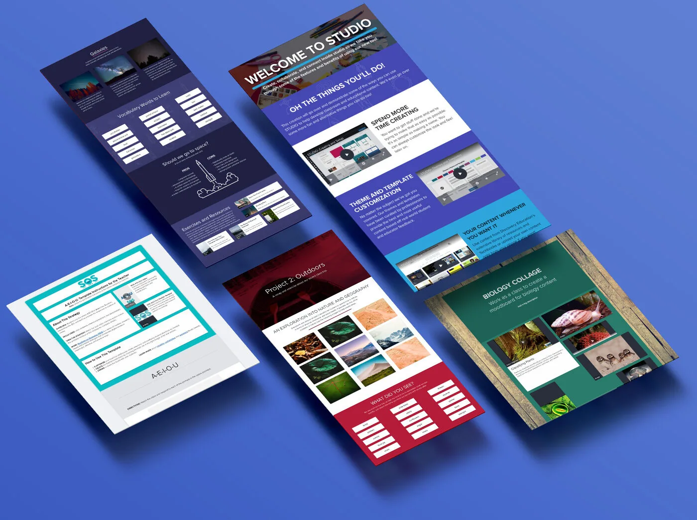
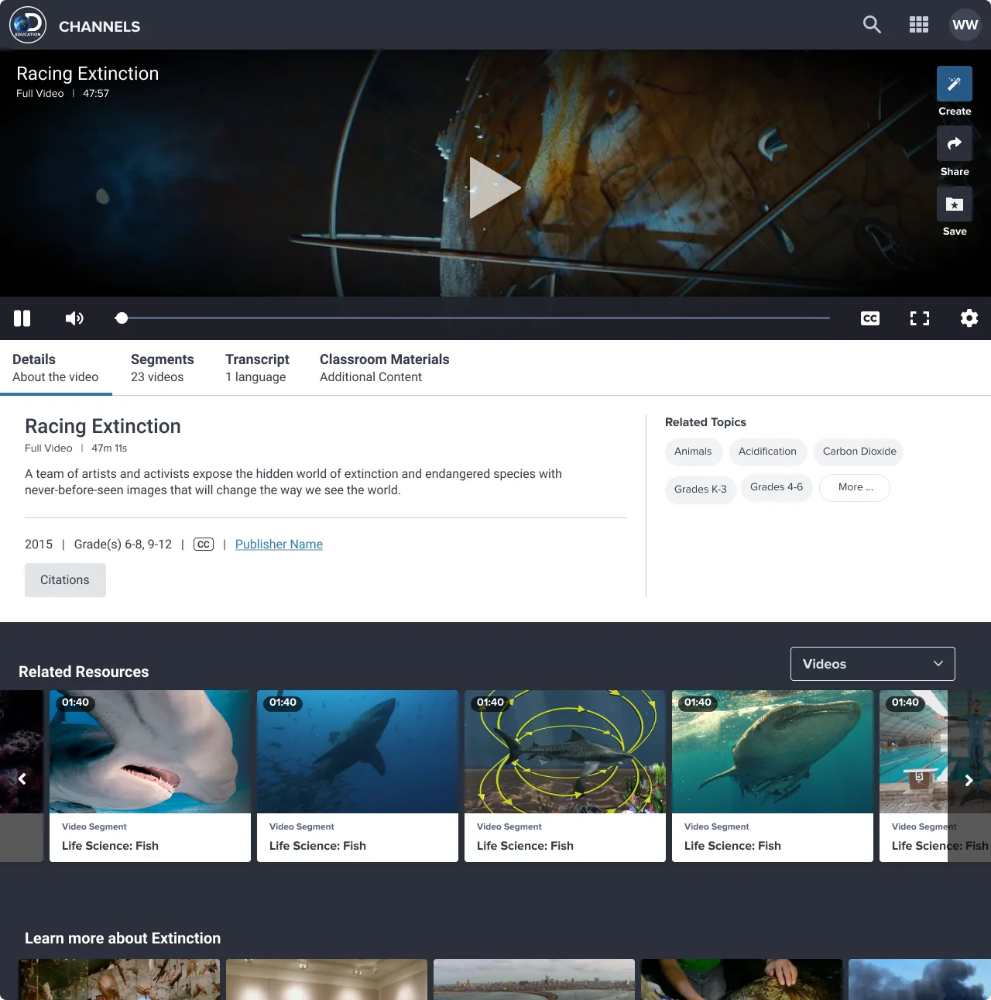

Work
Six projects from Amazon and Discovery Education. Each one is a full case study: the problem, what I did, what happened, and what I’d change.
01 Amazon · 2020–present
-
 EDM-01
Employee Document Management & AI
Led the redesign of Amazon’s document platform, found that screen-reader users couldn’t use it at all, and then designed AI features across four of its surfaces.
EDM-01
Employee Document Management & AI
Led the redesign of Amazon’s document platform, found that screen-reader users couldn’t use it at all, and then designed AI features across four of its surfaces.
-
 RES-02
Self-Service Resignation
Designed Amazon’s first self-service way to resign, which also shows people their other options first. Built the business case that got it funded.
RES-02
Self-Service Resignation
Designed Amazon’s first self-service way to resign, which also shows people their other options first. Built the business case that got it funded.
-
 AI-04
AI evaluation & design
Owned the evaluation bar AI features had to clear before launch, designed the AI layer across four product surfaces, and built my own AI design tools.
AI-04
AI evaluation & design
Owned the evaluation bar AI features had to clear before launch, designed the AI layer across four product surfaces, and built my own AI design tools.
02 Discovery Education
-

STU-03 Discovery Education Studio Shared boards where students and teachers could create together and see each other’s cursors live, on whatever device they had. -

MED-05 Media player redesign Short, focused design cycles on the video player that students and teachers use most. - HOM-06 Discovery Education Home A new homepage and navigation for the whole platform, and the first thing millions of teachers and students saw when they signed in.